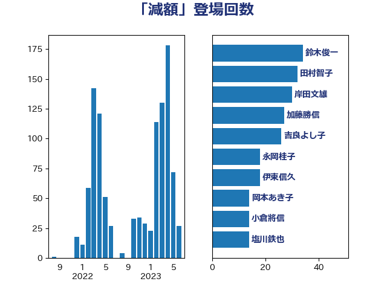

単語「減額」

| 鈴木俊一 | 自由民主党 | 34 回 |
| 田村智子 | 日本共産党 | 32 回 |
| 岸田文雄 | 自由民主党 | 30 回 |
| 加藤勝信 | 自由民主党 | 27 回 |
| 吉良よし子 | 日本共産党 | 26 回 |
| 永岡桂子 | 自由民主党 | 18 回 |
| 伊東信久 | 日本維新の会 | 18 回 |
| 岡本あき子 | 立憲民主党 | 14 回 |
| 小倉將信 | 自由民主党 | 14 回 |
| 塩川鉄也 | 日本共産党 | 14 回 |
| 杉尾秀哉 | 立憲民主党 | 13 回 |
| 後藤茂之 | 自由民主党 | 13 回 |
| 倉林明子 | 日本共産党 | 13 回 |
| 高橋千鶴子 | 日本共産党 | 12 回 |
| おおつき紅葉 | 立憲民主党 | 12 回 |
| 浜田聡 | NHK党 | 11 回 |
| 浮島智子 | 公明党 | 10 回 |
| 浅野哲 | 国民民主党 | 10 回 |
| 岸真紀子 | 立憲民主党 | 10 回 |
| 鰐淵洋子 | 公明党 | 9 回 |
| 長友慎治 | 国民民主党 | 9 回 |
| 野間健 | 立憲民主党 | 9 回 |
| 野田聖子 | 自由民主党 | 9 回 |
| 西岡秀子 | 国民民主党 | 9 回 |
| 石橋通宏 | 立憲民主党 | 9 回 |
| 松本剛明 | 自由民主党 | 9 回 |
| 上田清司 | 国民民主党 | 9 回 |
| 道下大樹 | 立憲民主党 | 8 回 |
| 石井啓一 | 公明党 | 8 回 |
| 末松信介 | 自由民主党 | 8 回 |
| 新垣邦男 | 立憲民主党 | 8 回 |
| 伊藤岳 | 日本共産党 | 8 回 |
| 紙智子 | 日本共産党 | 7 回 |
| 宮本徹 | 日本共産党 | 7 回 |
| 宮本岳志 | 日本共産党 | 7 回 |
| 金子恭之 | 自由民主党 | 6 回 |
| 西銘恒三郎 | 自由民主党 | 6 回 |
| 藤岡隆雄 | 立憲民主党 | 6 回 |
| 岩谷良平 | 日本維新の会 | 6 回 |
| 小沢雅仁 | 立憲民主党 | 6 回 |
| 古賀篤 | 自由民主党 | 6 回 |
| 高見康裕 | 自由民主党 | 5 回 |
| 竹谷とし子 | 公明党 | 5 回 |
| 竹内真二 | 公明党 | 5 回 |
| 田村貴昭 | 日本共産党 | 5 回 |
| 東徹 | 日本維新の会 | 5 回 |
| 安江伸夫 | 公明党 | 5 回 |
| 井上哲士 | 日本共産党 | 5 回 |
| 音喜多駿 | 日本維新の会 | 4 回 |
| 金子道仁 | 日本維新の会 | 4 回 |
| 西村康稔 | 自由民主党 | 4 回 |
| 藤井比早之 | 自由民主党 | 4 回 |
| 芳賀道也 | 国民民主党 | 4 回 |
| 田村まみ | 国民民主党 | 4 回 |
| 田中健 | 国民民主党 | 4 回 |
| 清水貴之 | 日本維新の会 | 4 回 |
| 櫻井充 | 自由民主党 | 4 回 |
| 横沢高徳 | 立憲民主党 | 4 回 |
| 林芳正 | 自由民主党 | 4 回 |
| 早稲田ゆき | 立憲民主党 | 4 回 |
| 打越さく良 | 立憲民主党 | 4 回 |
| 山田勝彦 | 立憲民主党 | 4 回 |
| 大西健介 | 立憲民主党 | 4 回 |
| 今井絵理子 | 自由民主党 | 4 回 |
| 中川貴元 | 自由民主党 | 4 回 |
| 高木宏壽 | 自由民主党 | 3 回 |
| 鈴木義弘 | 国民民主党 | 3 回 |
| 赤嶺政賢 | 日本共産党 | 3 回 |
| 自見はなこ | 自由民主党 | 3 回 |
| 羽田次郎 | 立憲民主党 | 3 回 |
| 笠井亮 | 日本共産党 | 3 回 |
| 福山哲郎 | 立憲民主党 | 3 回 |
| 石川香織 | 立憲民主党 | 3 回 |
| 石井章 | 日本維新の会 | 3 回 |
| 盛山正仁 | 自由民主党 | 3 回 |
| 田名部匡代 | 立憲民主党 | 3 回 |
| 深澤陽一 | 自由民主党 | 3 回 |
| 浜口誠 | 国民民主党 | 3 回 |
| 横山信一 | 公明党 | 3 回 |
| 柳ヶ瀬裕文 | 日本維新の会 | 3 回 |
| 川田龍平 | 立憲民主党 | 3 回 |
| 山岸一生 | 立憲民主党 | 3 回 |
| 大島九州男 | れいわ新選組 | 3 回 |
| 塩村あやか | 立憲民主党 | 3 回 |
| 佐藤正久 | 自由民主党 | 3 回 |
| 佐藤啓 | 自由民主党 | 3 回 |
| 井坂信彦 | 立憲民主党 | 3 回 |
| 中野洋昌 | 公明党 | 3 回 |
| 高木陽介 | 公明党 | 2 回 |
| 馬場雄基 | 立憲民主党 | 2 回 |
| 門山宏哲 | 自由民主党 | 2 回 |
| 鈴木敦 | 国民民主党 | 2 回 |
| 鈴木庸介 | 立憲民主党 | 2 回 |
| 金城泰邦 | 公明党 | 2 回 |
| 野村哲郎 | 自由民主党 | 2 回 |
| 重徳和彦 | 立憲民主党 | 2 回 |
| 越智俊之 | 自由民主党 | 2 回 |
| 赤羽一嘉 | 公明党 | 2 回 |
| 舩後靖彦 | れいわ新選組 | 2 回 |
| 緑川貴士 | 立憲民主党 | 2 回 |
| 窪田哲也 | 公明党 | 2 回 |
| 稲富修二 | 立憲民主党 | 2 回 |
| 秋葉賢也 | 自由民主党 | 2 回 |
| 礒崎哲史 | 国民民主党 | 2 回 |
| 矢倉克夫 | 公明党 | 2 回 |
| 河野太郎 | 自由民主党 | 2 回 |
| 沢田良 | 日本維新の会 | 2 回 |
| 櫻井周 | 立憲民主党 | 2 回 |
| 柚木道義 | 立憲民主党 | 2 回 |
| 枝野幸男 | 立憲民主党 | 2 回 |
| 松野博一 | 自由民主党 | 2 回 |
| 村田享子 | 立憲民主党 | 2 回 |
| 杉本和巳 | 日本維新の会 | 2 回 |
| 杉久武 | 公明党 | 2 回 |
| 新妻秀規 | 公明党 | 2 回 |
| 斎藤アレックス | 国民民主党 | 2 回 |
| 斉藤鉄夫 | 公明党 | 2 回 |
| 徳永久志 | 無所属 | 2 回 |
| 平山佐知子 | 無所属 | 2 回 |
| 島村大 | 自由民主党 | 2 回 |
| 山本太郎 | れいわ新選組 | 2 回 |
| 小池晃 | 日本共産党 | 2 回 |
| 小林史明 | 自由民主党 | 2 回 |
| 宮崎勝 | 公明党 | 2 回 |
| 守島正 | 日本維新の会 | 2 回 |
| 塩田博昭 | 公明党 | 2 回 |
| 城井崇 | 立憲民主党 | 2 回 |
| 吉田統彦 | 立憲民主党 | 2 回 |
| 吉田久美子 | 公明党 | 2 回 |
| 前川清成 | 日本維新の会 | 2 回 |
| 保岡宏武 | 自由民主党 | 2 回 |
| 仁木博文 | 無所属 | 2 回 |
| 中西健治 | 自由民主党 | 2 回 |
| 中司宏 | 日本維新の会 | 2 回 |
| 上田勇 | 公明党 | 2 回 |
| 三浦信祐 | 公明党 | 2 回 |
| ながえ孝子 | 無所属 | 2 回 |
| 馬場成志 | 自由民主党 | 1 回 |
| 須藤元気 | 無所属 | 1 回 |
| 青柳陽一郎 | 立憲民主党 | 1 回 |
| 青木愛 | 立憲民主党 | 1 回 |
| 阿部司 | 日本維新の会 | 1 回 |
| 鈴木宗男 | 日本維新の会 | 1 回 |
| 金子恵美 | 立憲民主党 | 1 回 |
| 野田国義 | 立憲民主党 | 1 回 |
| 遠藤良太 | 日本維新の会 | 1 回 |
| 進藤金日子 | 自由民主党 | 1 回 |
| 谷田川元 | 立憲民主党 | 1 回 |
| 西田昌司 | 自由民主党 | 1 回 |
| 藤巻健太 | 日本維新の会 | 1 回 |
| 藤井一博 | 自由民主党 | 1 回 |
| 蓮舫 | 立憲民主党 | 1 回 |
| 萩生田光一 | 自由民主党 | 1 回 |
| 若林健太 | 自由民主党 | 1 回 |
| 緒方林太郎 | 無所属 | 1 回 |
| 細田健一 | 自由民主党 | 1 回 |
| 篠原豪 | 立憲民主党 | 1 回 |
| 笠浩史 | 無所属 | 1 回 |
| 竹詰仁 | 国民民主党 | 1 回 |
| 秋野公造 | 公明党 | 1 回 |
| 福田昭夫 | 立憲民主党 | 1 回 |
| 福島みずほ | 社会民主党 | 1 回 |
| 神谷宗幣 | 参政党 | 1 回 |
| 石川博崇 | 公明党 | 1 回 |
| 石井苗子 | 日本維新の会 | 1 回 |
| 畦元将吾 | 自由民主党 | 1 回 |
| 田島麻衣子 | 立憲民主党 | 1 回 |
| 牧山ひろえ | 立憲民主党 | 1 回 |
| 片山大介 | 日本維新の会 | 1 回 |
| 浅川義治 | 日本維新の会 | 1 回 |
| 泉健太 | 立憲民主党 | 1 回 |
| 水岡俊一 | 立憲民主党 | 1 回 |
| 櫛渕万里 | れいわ新選組 | 1 回 |
| 森山浩行 | 立憲民主党 | 1 回 |
| 根本匠 | 自由民主党 | 1 回 |
| 柴田巧 | 日本維新の会 | 1 回 |
| 東国幹 | 自由民主党 | 1 回 |
| 本村伸子 | 日本共産党 | 1 回 |
| 早坂敦 | 日本維新の会 | 1 回 |
| 志位和夫 | 日本共産党 | 1 回 |
| 庄子賢一 | 公明党 | 1 回 |
| 平木大作 | 公明党 | 1 回 |
| 岩渕友 | 日本共産党 | 1 回 |
| 山谷えり子 | 自由民主党 | 1 回 |
| 山田太郎 | 自由民主党 | 1 回 |
| 山添拓 | 日本共産党 | 1 回 |
| 山本香苗 | 公明党 | 1 回 |
| 山本博司 | 公明党 | 1 回 |
| 山本剛正 | 日本維新の会 | 1 回 |
| 山崎誠 | 立憲民主党 | 1 回 |
| 山口那津男 | 公明党 | 1 回 |
| 小熊慎司 | 立憲民主党 | 1 回 |
| 小沼巧 | 立憲民主党 | 1 回 |
| 小宮山泰子 | 立憲民主党 | 1 回 |
| 寺田稔 | 自由民主党 | 1 回 |
| 奥野総一郎 | 立憲民主党 | 1 回 |
| 太栄志 | 立憲民主党 | 1 回 |
| 天畠大輔 | れいわ新選組 | 1 回 |
| 大石あきこ | れいわ新選組 | 1 回 |
| 大塚耕平 | 国民民主党 | 1 回 |
| 和田有一朗 | 日本維新の会 | 1 回 |
| 吉田豊史 | 無所属 | 1 回 |
| 古賀之士 | 立憲民主党 | 1 回 |
| 住吉寛紀 | 日本維新の会 | 1 回 |
| 伊藤孝恵 | 国民民主党 | 1 回 |
| 伊波洋一 | 無所属 | 1 回 |
| 井原巧 | 自由民主党 | 1 回 |
| 五十嵐清 | 自由民主党 | 1 回 |
| 中曽根康隆 | 自由民主党 | 1 回 |
| 一谷勇一郎 | 日本維新の会 | 1 回 |
| たがや亮 | れいわ新選組 | 1 回 |